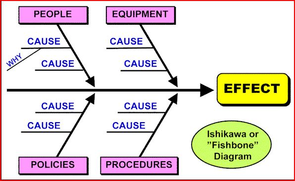

Root Cause Analysis is a systematic approach to get to the root of problems.
Using a fishbone diagram while brainstorming possible causes helps you focus on the various possibilities.

Here is the link to the details of root cause analysis.
5-Why is one of the most commonly used quality system tools. It is a simple and methodical way to identify the root cause of an issue. It drives you to find and solve the underlying cause of the issue rather than just the obvious symptom. By solving the underlying cause you ensure that the problem does not happen again. This prevents you from having to solve the symptom (the problem you currently see) again in the future; this saves you time, money, and effort every day.
Back to top